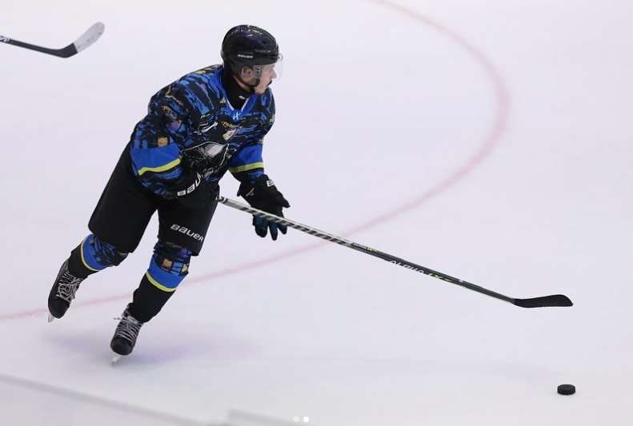
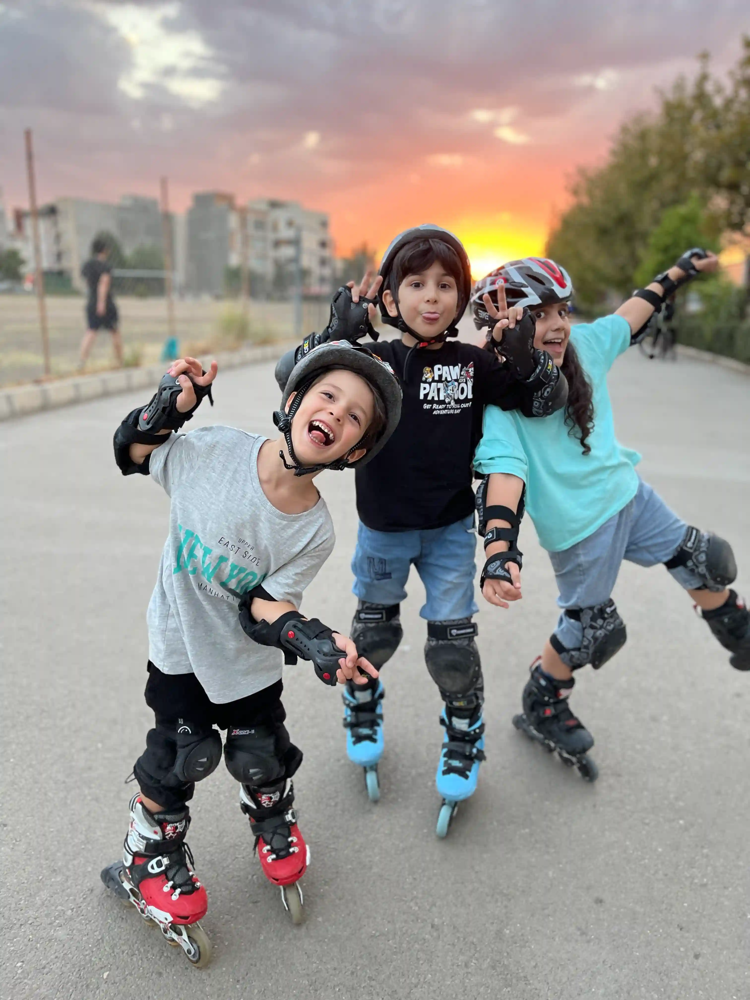
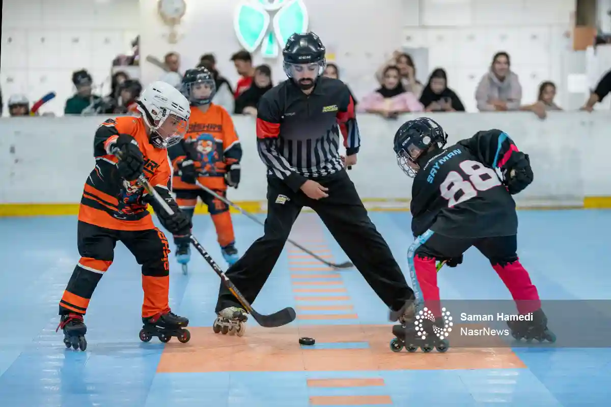
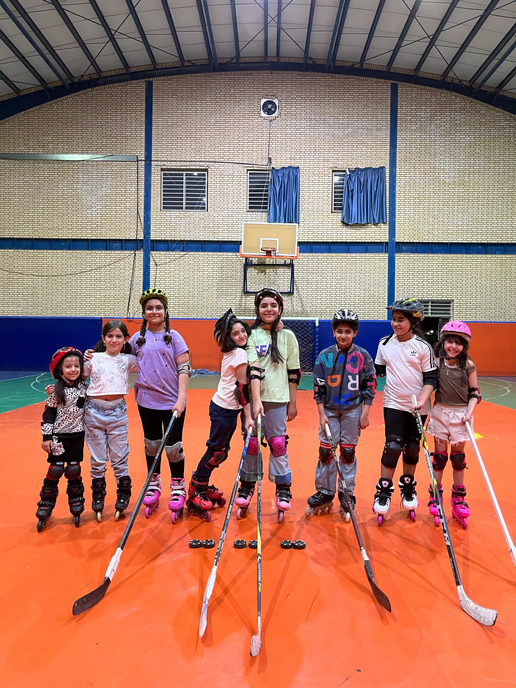
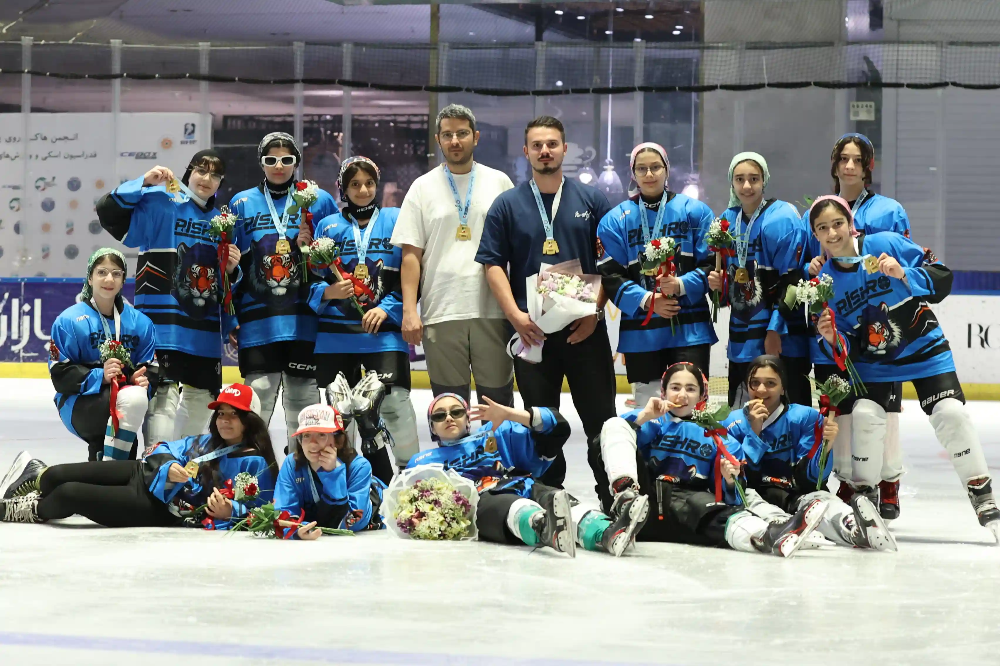

تمرین هدفمند،
پیشرفت واقعی
هر جلسه با هدف مشخص طراحی میشود؛ از کنترل بدن و تعادل تا ترمز، چرخش و تکنیکهایی که در بازی به کار میآیند
۰۱
اینجا، هر حرکت شروع یک مسیر تازه است؛ از اولین گامهای اسکیت تا پرورش قهرمانانی که برای بردن آماده شدهاند

پیشرو هاکی جاییست برای ساختن تعادل، اعتمادبهنفس و روحیه تیمی. آموزشها مرحلهبهمرحله طراحی شدهاند تا هر هنرجو با هر سن و سطحی، پیشرفت خودش را ببیند
هر جلسه با هدف مشخص طراحی میشود؛ از کنترل بدن و تعادل تا ترمز، چرخش و تکنیکهایی که در بازی به کار میآیند
مربیهای پیشرو هاکی در اسکیت هاکی و هاکی روی یخ کنار تو هستند
از اولین تجربه اسکیت تا تمرینات تخصصی و تیمی؛ برنامههای پیشرو متناسب با سن، سطح و هدف هر بازیکن طراحی شدهاند
ترکیبی از سرعت، کنترل و تکنیک در هر حرکت. از تسلط بر اسکیت و کنترل پاک تا پاس، شوت، دریبل و بازی تیمی؛ مهارتهایی که در تمرین ساخته میشوند و در رقابت به کار میآیند
بازی روی یخ، با سرعتی متفاوت تمرین تخصصی اسکیت، کنترل پاک، تکنیک، تاکتیک و بازی تیمی برای بازیکنانی که آماده رقابتاند
هر بازیکن حرفهای، از یک نقطه شروع کرده است اینجا نقطه شروع توست؛ جایی برای ساختن تعادل، کنترل و اعتمادبهنفس پیش از ورود به دنیای هاکی
کلاسهای مبتدی در پیست روباز برگزار میشوند. گروههای نیمهخصوصی ۴ تا ۶ نفرهاند؛ برای تمرکز بیشتر، پلن خصوصی ۱ تا ۲ نفره را انتخاب کن
شروع اسکیت پایه و عضویت در خانواده پیشرو
آموزش پیوسته و برنامهریزی هدفمند توسط تیم مربیگری پیشرو
برای هدفهای بزرگ، تمرین معمولی کافی نیست تمرینات شخصیسازیشده و همراهی مستقیم مربی، متناسب با سطح، نیاز و هدف تو

۰۱ ۰۲
۰۲
۰۳
۰۵بخشهایی از مسیر بازیکنان پیشرو؛ از تمرین و رقابت تا لحظههای قهرمانی. برای دیدن صفحه کامل تیمها و بازیکنان وارد فهرست تیمها شو

بازیکنان ثبتشده توسط ادمین باشگاه پیشرو، در این بخش بهصورت خودکار نمایش داده میشوند. برای دیدن فهرست کامل هر تیم وارد صفحه تیم شوید
قوانین بازی، تجهیزات، تمرین و هرآنچه یک بازیکن هاکی برای بهتر شدن لازم دارد. جدیدترین مطالب منتشرشده بهصورت خودکار از وبلاگ نمایش داده میشوند.
تمرینهای پیشرو در چهار مجموعه ورزشی برگزار میشود؛ نزدیکترین نقطه به خودت را انتخاب کن
برای خرید اسکیت سردرگم نشو. با مشاوره مربی، متناسب با سن، سطح، بودجه و نوع استفاده انتخاب کن. اسکیتهای موجود باشگاه را هم میتوانی ببینی
پشت هر مدال، ساعتها تمرین و یک تیم واقعی ایستاده است. مسیر افتخارات پیشرو با تلاش بازیکنان و مربیان ساخته شده
اسکیت هاکی رده نوجوانان
مسابقات هاکی روی یخ
معرفی بازیکنان به تیمهای منتخب
قهرمان بعدی شاید تو باشی
اگر جواب سؤالت را اینجا پیدا نکردی، فرم مشاوره را پر کن تا تیم پیشرو با تو تماس بگیرد
نه. برای جلسه اول میتوانی با هماهنگی مربی از اسکیتهای موجود استفاده کنی. همچنین برای خرید، مشاوره تخصصی بر اساس قد، وزن، سطح و بودجهات داریم
کلاسها در چهار مجموعه برگزار میشوند: پیست اسکیت الغدیر، سالن ورزشی ۱۲ آذر مینودر، سالن ورزشی دانشگاه رجا و ورزشگاه الوند. زمان و محل جلسه بعد از ثبت درخواست با تو هماهنگ میشود
بله. پیشرو هاکی برای کودکان، نوجوانان و بزرگسالان تیم و کلاس دارد. پس از ارزیابی اولیه، رده مناسب را پیشنهاد میدهیم
در پلن نیمهخصوصی، گروه ۴ تا ۶ نفره است؛ پلن خصوصی برای ۱ تا ۲ نفر طراحی شده و تمرینها با سرعت و هدف اختصاصی شما جلو میرود
نام و شمارهات را بگذار. برای انتخاب پلن، زمانبندی و سطح مناسب با تو تماس میگیریم